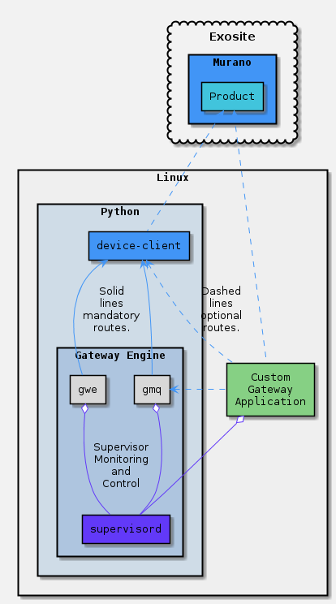

Gateway Engine - Docs
Gateway Engine is designed to be a custom application hosting framework.

Key Features
As discussed in the README below, there are a number of key features that make Gateway Engine a valuable proposition for any IoT solution.
Application Hosting
Gateway Engine uses the open source [supervisord] project to provide the following features to the application hosting environment on a gateway:
- Application logging management
- Application start/restart/crash rules and monitoring
- Language neutral (C,Python,Node,Go,etc.)
In addition to what Supervisor provides, gwe provides the following features to a hosted Custom Gateway Application:
- Over-the-Air Updating
- Hosted Application Version Tracking
- OS/Filesystem Metadata Collection
- Bandwidth Telemetrics (Beta)
OTA Application Management
Gateway Engine was designed to install and update applications Over-the-Air. For more information on building Custom Gateway Application tarballs see the Gateway Engine (gwe) README page on Hosted Applications.
OS/Filesystem Metadata Collection
Gateway Engine reports several datapoints every time its update interval lapses. Some of the data in these reports include:
- Disk usage on available mount points
- Memory consumed by hosted applications
- Network interface IP addresses
Exosite Device API Client
Gateway Engine is always built and installed with the device-client library.
Bandwidth Telemetrics (Beta)
The log of all requests made with the device-client library is queried and statistics are reported to the usage_report dataport.
Resources
For detailed information on how to build or install gateway-engine:
For documentation on the gateway-engine python package: